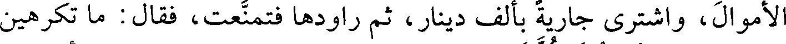
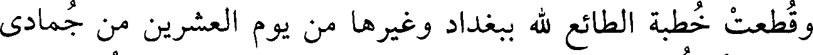
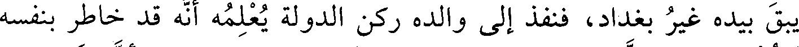
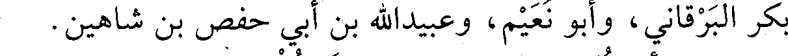
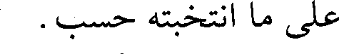
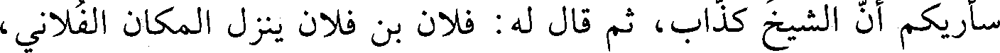
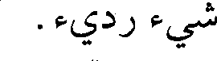
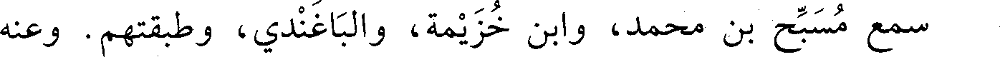
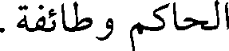
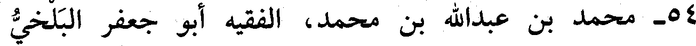

File: 000100.gt.txt (if the image is defective, simply delete all Arabic text and the line will be excluded)

فاحترق أكثر هذا السوق، وهلك شيء كثير، واستفحل أمر العيارين ببغداد
File: 000101.gt.txt (if the image is defective, simply delete all Arabic text and the line will be excluded)

حتى ركبوا الخيل وتلقبوا بالقواد، وغلبوا على الأمور وأخذوا الخفارة من
File: 000102.gt.txt (if the image is defective, simply delete all Arabic text and the line will be excluded)

الأسواق والدروب، وكان فيهم أسود الزبد كان يأوي قنطرة الزبد ويشحذ
File: 000103.gt.txt (if the image is defective, simply delete all Arabic text and the line will be excluded)

وهو عريان، فلما كثر الفساد رأى هذا الأسود من هو أضعف منه قد أخذ
File: 000104.gt.txt (if the image is defective, simply delete all Arabic text and the line will be excluded)

السيف، فطلب الأسود سيفا ونهب وأغار، وحف به طائفة وتقوى، وأخذ
File: 000105.gt.txt (if the image is defective, simply delete all Arabic text and the line will be excluded)

الأموال، واشترى جارية بألف دينار، ثم راودها فتمنعت، فقال: ما تكرهين
File: 000106.gt.txt (if the image is defective, simply delete all Arabic text and the line will be excluded)

مني؟ قالت: أكرهك كلك، قال: ما تحبين؟ قالت: تبيعني. قال: أو خيرا
File: 000107.gt.txt (if the image is defective, simply delete all Arabic text and the line will be excluded)

من ذلك، فحملها إلى القاضي وأعتقها، ووهبها ألف دينار، فعجب الناس
File: 000108.gt.txt (if the image is defective, simply delete all Arabic text and the line will be excluded)

من سماحته، ثم خرج إلى الشام فهلك هناك.
File: 000109.gt.txt (if the image is defective, simply delete all Arabic text and the line will be excluded)

وقطعت خطبة الطائع لله ببغداد وغيرها من يوم العشرين من جمادى
File: 000110.gt.txt (if the image is defective, simply delete all Arabic text and the line will be excluded)

الأولى، إلى أن أعيدت في عاشر رجب، فلم يخطب في هذه الجمع لإمام
File: 000111.gt.txt (if the image is defective, simply delete all Arabic text and the line will be excluded)

وذلك لأجل شغب وقع بينه وبين عضد الدولة.
File: 000112.gt.txt (if the image is defective, simply delete all Arabic text and the line will be excluded)

وكان عضد الدولة قد قدم العراق فأعجبه ملكها، فعمل عليها،
File: 000113.gt.txt (if the image is defective, simply delete all Arabic text and the line will be excluded)

واستمال الجند، فشغبوا على عز الدولة، فأغلق بابه، وكتب عضد الدولة
File: 000114.gt.txt (if the image is defective, simply delete all Arabic text and the line will be excluded)

عن الطائع في الآفاق باستقرار الأمر لعضد الدولة، وخلع عضد الدولة على
File: 000115.gt.txt (if the image is defective, simply delete all Arabic text and the line will be excluded)

محمد بن بقية وزير عز الدولة، ثم اضطربت الأمور على عضد الدولة، ولم
File: 000116.gt.txt (if the image is defective, simply delete all Arabic text and the line will be excluded)

يبق بيده غير بغداد، فنفذ إلى والده ركن الدولة يعلمه أنه قد خاطر بنفسه
File: 000117.gt.txt (if the image is defective, simply delete all Arabic text and the line will be excluded)

وجنده، وقد هذب مملكة العراق واستعاد الطائع إلى داره، وأن عز الدولة
File: 000118.gt.txt (if the image is defective, simply delete all Arabic text and the line will be excluded)

عاص لا يقيم دولة، فلما بلغه ذلك غضب، وقال للرسول: قل له: خرجت
File: 000119.gt.txt (if the image is defective, simply delete all Arabic text and the line will be excluded)

في نصرة أحمد ابن أخي أو في الطمع في مملكته؟ فأفرج عضد الدولة عن
File: 000120.gt.txt (if the image is defective, simply delete all Arabic text and the line will be excluded)
184
File: 000121.gt.txt (if the image is defective, simply delete all Arabic text and the line will be excluded)

الكديمي، وإسماعيل القاضي، ومحمد بن غالب تمتام، ومحمد بن سليمان
File: 000122.gt.txt (if the image is defective, simply delete all Arabic text and the line will be excluded)

الباغندي، وجماعة، وانتخب عليه الدارقطني. روى عنه ابن رزقويه، وأبو
File: 000123.gt.txt (if the image is defective, simply delete all Arabic text and the line will be excluded)

بكر البرقاني، وأبو نعيم، وعبيدالله بن أبي حفص بن شاهين.
File: 000124.gt.txt (if the image is defective, simply delete all Arabic text and the line will be excluded)

قال أبو نعيم : كان يقول لنا الدارقطني: اقتصروا من حديث أبي بحر
File: 000125.gt.txt (if the image is defective, simply delete all Arabic text and the line will be excluded)

على ما انتخبته حسب.
File: 000126.gt.txt (if the image is defective, simply delete all Arabic text and the line will be excluded)

وقال ابن أبي الفوارس : فيه نظر.
File: 000127.gt.txt (if the image is defective, simply delete all Arabic text and the line will be excluded)

وقال البرقاني : حضرت يوما عند أبي بحر، فقال لنا ابن السرخسي :
File: 000128.gt.txt (if the image is defective, simply delete all Arabic text and the line will be excluded)

سأريكم أن الشيخ كذاب، ثم قال له : فلان بن فلان ينزل المكان الفلاني،
File: 000129.gt.txt (if the image is defective, simply delete all Arabic text and the line will be excluded)

سمعت منه؟ قال : نعم. قال البرقاني : ولم يكن لذاك وجود.
File: 000130.gt.txt (if the image is defective, simply delete all Arabic text and the line will be excluded)

قال ابن أبي الفوارس : توفي لأربع بقين من جمادى الأولى. قال :
File: 000131.gt.txt (if the image is defective, simply delete all Arabic text and the line will be excluded)

ومولده سنة ست وستين ومئتين قال : وكان مخلطا، وله أصول جياد، وله
File: 000132.gt.txt (if the image is defective, simply delete all Arabic text and the line will be excluded)

شيء رديء.
File: 000133.gt.txt (if the image is defective, simply delete all Arabic text and the line will be excluded)

قلت : روى ابن عبدالدائم حديثه بعلو عن ابن المعطوش(1) .
File: 000134.gt.txt (if the image is defective, simply delete all Arabic text and the line will be excluded)

52 - محمد بن أبي الهيثم خالد بن الحسن، أبو بكر المطوعي
File: 000135.gt.txt (if the image is defective, simply delete all Arabic text and the line will be excluded)
البخاري.
File: 000136.gt.txt (if the image is defective, simply delete all Arabic text and the line will be excluded)

سمع مسبح بن محمد، وابن خزيمة، والباغندي، وطبقتهم. وعنه
File: 000137.gt.txt (if the image is defective, simply delete all Arabic text and the line will be excluded)

الحاكم وطائفة.
File: 000138.gt.txt (if the image is defective, simply delete all Arabic text and the line will be excluded)

53 - محمد بن العباس بن أحمد، أبو بكر المسعودي الإستراباذي
File: 000139.gt.txt (if the image is defective, simply delete all Arabic text and the line will be excluded)

الفقيه.
File: 000140.gt.txt (if the image is defective, simply delete all Arabic text and the line will be excluded)

رحل وسمع أبا يعلى الموصلي، ومحمد بن الحسين الخثعمي
File: 000141.gt.txt (if the image is defective, simply delete all Arabic text and the line will be excluded)

الكوفي، وطبقتهما. وعنه أبو سعد الإدريسي، وقال : لا يحتج به.
File: 000142.gt.txt (if the image is defective, simply delete all Arabic text and the line will be excluded)

بقي إلى هذه السنة.
File: 000143.gt.txt (if the image is defective, simply delete all Arabic text and the line will be excluded)

54 - محمد بن عبدالله بن محمد، الفقيه أبو جعفر البلخي
File: 000144.gt.txt (if the image is defective, simply delete all Arabic text and the line will be excluded)

الحنفي.
File: 000145.gt.txt (if the image is defective, simply delete all Arabic text and the line will be excluded)
سنة ثلاث وستين وثلاث مئة
File: 000146.gt.txt (if the image is defective, simply delete all Arabic text and the line will be excluded)

61 - أحمد بن محمد بن عبدالبر، أبو عثمان التجيبي القرطبي،
File: 000147.gt.txt (if the image is defective, simply delete all Arabic text and the line will be excluded)

يعرف بابن الكشكيناني.
File: 000148.gt.txt (if the image is defective, simply delete all Arabic text and the line will be excluded)

حج، وسمع أبا سعيد ابن الأعرابي ورجع، وتوفي في شوال(1) .
File: 000149.gt.txt (if the image is defective, simply delete all Arabic text and the line will be excluded)

62 - أحمد بن محمد بن علي بن إبراهيم النرسي البغدادي.